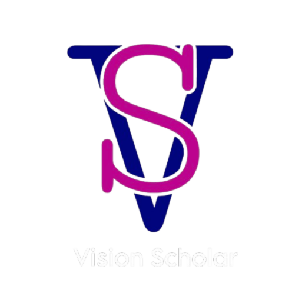

AI Education Consultancy · Berkshires, MA
K-12 AI Professional Development
AI is changing everything about how we teach and lead. Vision Scholar gives K-12 schools the clarity, training, and support to embrace that change with confidence.
Book a Free Consultation See Our ServicesFadia Rostom knows what it means to build something from nothing.
She arrived in the United States navigating a new language, a new culture, and a new life — and turned that experience into a career defined by possibility. Today, she is the Founder and Principal Consultant of Vision Scholar Consultation, a K-12 AI education consultancy based in the Berkshires, and one of the region's most sought-after voices on AI, belonging, and leadership.
Before founding Vision Scholar, Fadia served six years as Principal of Saint Agnes Academy in Dalton, MA, where she led the school to the top NEASC accreditation rating among independent schools in Massachusetts. She has taught at Damascus University, and built database systems for international organizations — all before most people were talking about AI in classrooms.
In 2025, she chaired The WE in AI Berkshire Summit, bringing together partners from Harvard, MIT, UMass, and the Massachusetts Department of Elementary and Secondary Education for the region's first AI education event. Workshops she's facilitated have achieved 85–95% educator AI adoption rates — not because she mandates it, but because she makes it make sense.
Fadia holds a Master of Educational Leadership and Management from Fitchburg State University, a BA from MCLA, and certifications in computer systems engineering. She is a keynote speaker at national conferences including NEASC, DLAC, MATSOL, and FACTS, and a proud advocate for the Hate Has No Home Here movement. She is fluent in Arabic and English, speaks basic Spanish, and is a mother of three daughters.
"At Vision Scholar, the work is personal. It always has been."
Our deepest expertise is in K-12 education — from independent schools to public districts. We also work with higher ed institutions, nonprofits, and mission-driven organizations.
Whether you're a superintendent navigating district-wide AI policy or a principal trying to support your teachers, we meet you where you are and build from there.
Faculty development programs that bridge academic tradition with AI-enhanced teaching and research.
Helping mission-driven teams adopt AI to do more with limited resources — without losing their values.
Practical AI upskilling for teams ready to work smarter and stay competitive.
Every engagement is tailored to your context. No generic workshops — just practical, evidence-based programs designed around your school's actual needs.
You don't need to become an AI expert — you need to lead confidently through a moment of real uncertainty. This program helps school leaders understand what AI means for their schools, make informed decisions about implementation, and guide their teams with clarity and calm. We work alongside you, not ahead of you.
The best PD doesn't just show teachers new tools — it changes how they feel about using them. Our workshops are hands-on, practical, and built around your curriculum and grade levels. Teachers leave with real skills, real confidence, and a clear picture of how AI can make their work lighter — not more complicated.
Every school community has different values, families, and concerns around AI. We help you develop policies that reflect yours — clear enough to give staff and families confidence, flexible enough to grow as the technology evolves. We facilitate the hard conversations so you don't have to navigate them alone.
A single workshop can spark enthusiasm. Sustained support turns that spark into real change. Over 90 days, we stay close — checking in, troubleshooting, celebrating wins, and adjusting as your team grows. The goal is a school that doesn't need us anymore. That's how we measure success.
Every partnership follows a simple three-phase approach designed around your goals — not ours.
We begin with a 90-minute session focused on listening first, strategizing second. Together we identify AI opportunities that align with your school's values, map your transformation journey, and define what success actually looks like for your community.
Hands-on training where every participant works with real AI tools — not slides about them. Sessions are tailored to your team's actual challenges, creating a safe space where questions are welcomed and experimentation is encouraged.
A 90-day follow-up program ensures your AI initiatives take root. We provide regular touchpoints, real-time troubleshooting as challenges emerge, and ongoing capability building so your team grows long after our formal engagement ends.
From public school districts to independent schools, here's what school leaders have experienced working with Vision Scholar.
Schedule a complimentary 30-minute consultation to explore how Vision Scholar can support your school's AI journey.
Book Your Free ConsultationWe respond to all inquiries within 24 hours during business hours. Prefer to skip the inbox? Book directly on our calendar.
Book a Free Consultation